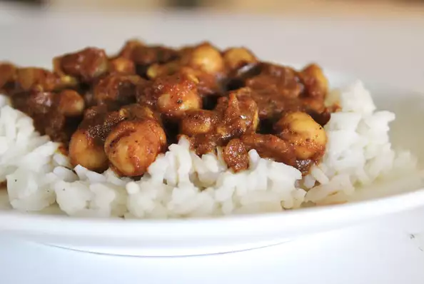

A popular vegetarian Indian dish made of chickpeas and spices. Serve with white rice or naan.
Ingredients
- 1 tablespoon vegetable oil
- 1 small onion, diced
- 1 teaspoon minced garlic
- 1 teaspoon minced fresh ginger root
- 2 star anise pods, broken into pieces
- 1 (15 ounce) can chickpeas, drained and rinsed
- 1 (8 ounce) can tomato sauce
- 1 cup water
- 1 teaspoon chile powder
- 1 teaspoon garam masala
- 1 teaspoon salt
- 1 teaspoon cumin & coriander
Steps
- Heat oil in a pot over medium-high heat. Saute onion until translucent, about 5 minutes.
- Add garlic, ginger, and anise; stir. Add chickpeas, tomato sauce, water, chile powder, garam masala, salt, cumin, coriander, turmeric, and clove.
- Reduce heat to medium-low and simmer, covered, until chickpeas start to soften, 5 to 7 minutes.
- Mash some of the chickpeas directly in the pot to give the sauce a chunkier consistency.
- Cover and continue simmering, stirring occasionally, until flavors come together, about 15 minutes.
- Remove star anise pieces and clove before serving.